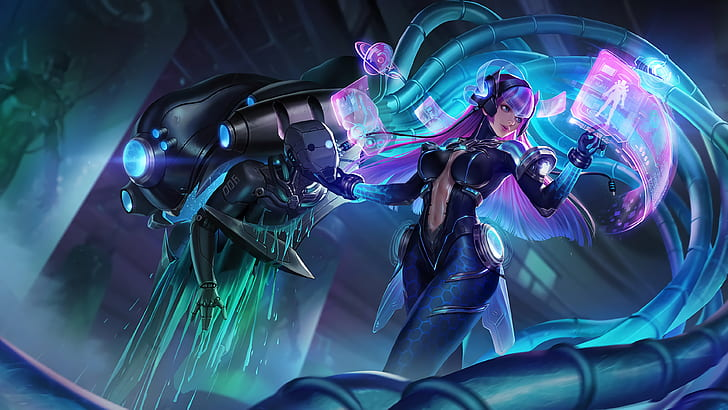
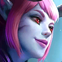
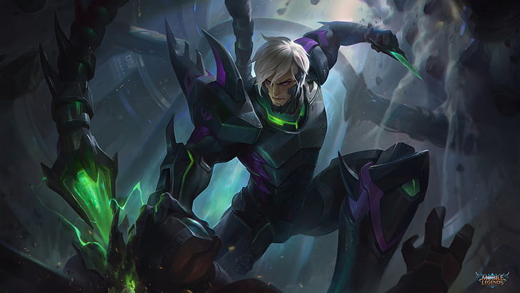
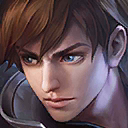
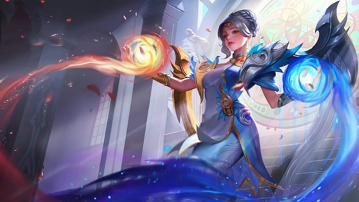
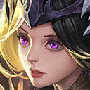

Thirty years ago, a prince was born in the Moniyan Empire. On the day of prince's first birthday he disappeared, and sorrow befell the whole Moniyan Empire. The Empire Nobles appointed the Imperial Knights and the Monastery of Light to find the truth. At the same time, the Son of Darkness, Dyrroth, was born too. The Demons nourished him with Demons Blood. Integrated with Wrath of the Abyss since childhood, Dyrroth was surrounded by a protective shield. No matter who touched him, they would not withstand the wrath.


The Shura clan have lived in isolation for many generations, their men renowned for being the bravest fighters and their women for being extraordinary beauties. At the heart of the Shura's world is a hidden realm known as the Three Thousand Worlds. The young Martis was brave and bellicose. By a young age he had defeated psychic demons of the first 300 worlds, earning the title of Ashura from his people.


The Dark Elf Selena had been dependent on her sister Karina since childhood. Selena maintained her innocent nature under the protection of her sister, until she discovered the dirty things her sister Karina had done for her. She thought that she had become a burden for her sister. In order to gain more power, she dedicated herself to the Abyss, but did not want to be completely controlled by the Abyss and ultimately became a horrifying demon.


Gusion was the fourth son of the family patriarch and had a strong affinity for light elements, from an early age. But rather than spending all his days inside, studying magics, Gusion would use his control over light to enhance his weapons. He always believed that the elders of the family were too stubborn and set in their ways. When faced with opponents who also aspired to become great assassin, his would demonstrate much superior fighting skills that expected.


Lunox was born with magical powers, and her dreamworld reflects and changes the real world. With this power, she uses her dreamworld to temporarily maintain the balance of energy between order and chaos. But as the power of order and the power of chaos rushed into her dreams. Lunox fell into a long sleep and turned into one of the "Twilight Orbs."
"I awoke from the abyss to extinguish the light."
"Three thousand worlds, and not a single worthy foe!
"Come to the dark abyss and I will lead you to victory."
"I'm bound by nothing — be it family or destiny."
"I'm willing to sacrifice myself, for this world I love.